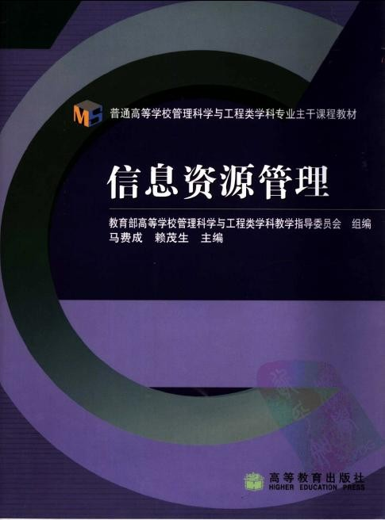

时间是一种很玄奥的东西！不同的人经历不同的时间，所产生的效果是截然不同的！我在过去一年中学会很多！收获很多！改变很多！今天用文字记录自己过去一年的改变！让我站在现在的角度看看我过去的一年又什么收获和缺憾！
收获：
1，自考
自考不应该仅仅是一次考试，对待自考要以理性的发展的眼光去看！我们报的是计算机管理的自考！其中有几门课程值得我们每一个人去了解和细细美味！在未来收获的也不能仅仅是一张白纸黑字的文凭！而是自考应该经历和懂得的知识！

首先是《信息资源管理》，当今社会，这个飞速变化的时代！普通意义上的经济竞争已经退居第二席位！在这个时代的大潮下，知识经济被提到一个前所未有的高度！知识，正式信息资源的一种结晶！没有一个宏观的信息资源观念，不能在这个社会有更高层次的发展和提升！
如果设想我们拥有一家公司，我们面临如此汹涌澎湃的信息大潮该怎么应对！这个大潮已经席卷了世界十几年，且越卷余越凶！面临如此的“危机”，我们应该警醒！这是一次机遇！同样是一次危机！世界上的每一次“革命”必然会引来一场淘汰！毋庸置疑，大中华的历史告诉了我们！百年耻辱的战争告诉了我们！此次大潮“危机”甚于“机遇”！有了这个意识才能在大海中游荡和猎食！
自考的这几本书，让我们初步认识到信息泛滥与稀缺的矛盾关系！认识到信息革命的巨大，无声！从这个角度看世界！世界和你以为的不一样！
2，时间管理
有一个词被说了无数遍，少有人做到：高效！有一件事很多人做，少有人坚持：时间管理！有一个想法倡导好多年，迟迟没有具体的措施：快乐生活！
通过半年的学习和实践，时间管理才初具雏形！但是它带来的好处是我没有意料到的！时间管理不仅仅让我的效率得到了提高，也大大提升了我的生活质量！
首先，人是一个人，具有情绪，能表达和交流的完整的人！这样的人首先考虑的不是学习和工作，而应该是生活！人首先要有一个好的生活质量才能保证自己积极高效地完成自己的工作！所以时间管理本质是个人管理，个人管理第一要务是快乐！
学习调节自己，学会延长自己的兴奋时间！让自己处在一个稍稍兴奋的状态下学习和工作！人的效率自然会高！想想这么一个道理！影响我们的只有我们自己！我们还有什么理由宽容自己的懒惰！
在这里每天都收获着，第一次感觉不再是虚度光阴！给自己鼓励！加油